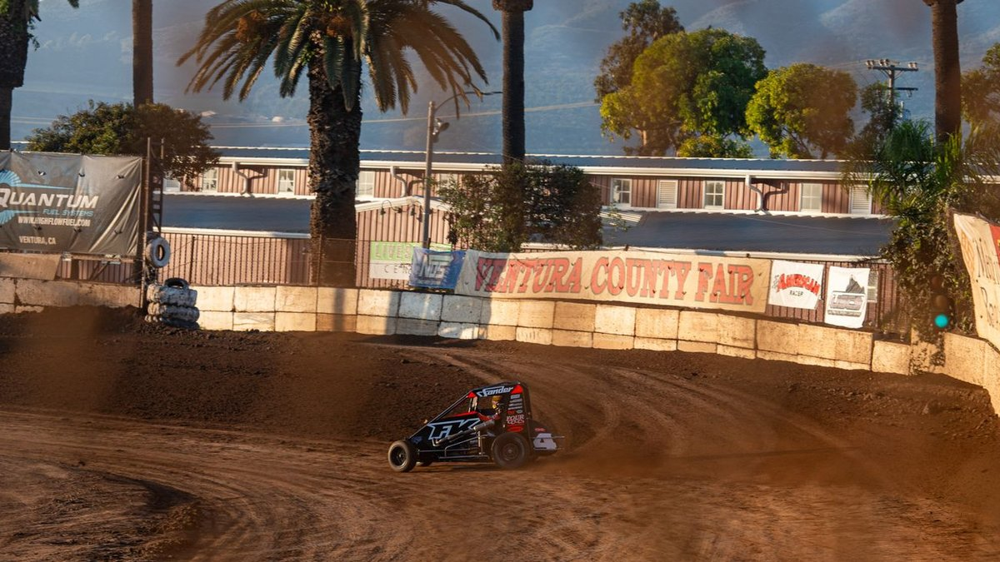

This week: Corey Day chases third straight Turkey Night win as USAC midgets close 2026
The USAC National Midgets race three times in six days at Plaza Park, Bakersfield and Ventura with Jacob Denney leading the standings, and the NAPA Sprintcar Invitational runs in downtown Adelaide.

The schedule for Sunday, November 22 through Saturday, November 28, as published by the series and tracks. Times are local, with U.S. Central time in parentheses. Check each track for start times, ticketing and weather before you go.
Midgets and USAC
The USAC NOS Energy Drink National Midget season ends this week with the last three races of the Golden State Invasion. Jacob Denney leads the standings with 1,191 points after Saturday’s Chase Johnson Classic at Merced, which Buddy Kofoid won and Denney finished sixth. Kevin Thomas Jr. is second with 1,086, 105 points back. Justin Grant is third with 1,067, Gavin Miller fourth with 1,027, Jakeb Boxell fifth with 1,019 and Kale Drake sixth with 1,003. Each of the three features pays 70 points to the winner, according to USAC’s event information. Sources: USAC Merced results and points, Nov. 21; USAC event information.
Monday, November 23, Plaza Park Raceway, Visalia, California. The Good Earth Farms Special presented by Peelz is the series’ first race at the 1/5-mile track, rescheduled from November 18 after saturated grounds and more rain in the forecast; read the update. The 40-lap feature pays $5,000 to win, and A-Class Micros are also on the card. Pits open at 3:30 p.m. PT, the front gate opens at 5 p.m. and hot laps begin at 6 p.m. (8 p.m. CT), followed by qualifying and racing. Source: USAC event information.
Tuesday, November 24, Bakersfield Speedway at Kevin Harvick’s Kern Raceway, Bakersfield, California. The Jason Leffler Memorial on the 1/3-mile dirt oval has a 30-lap feature paying $12,500 to win, with IMCA SportMods also on the card. Pits open at 2 p.m. PT, the front gates at 4 p.m. and cars are on track at 5 p.m. (7 p.m. CT). The race streams on FloRacing. Source: USAC event information.
Friday and Saturday, November 27–28, Ventura Raceway, Ventura, California. USAC has 54 drivers on the entry list for the 85th ARP Turkey Night Grand Prix on the 1/5-mile oval. Friday is midget practice plus Ultimate Sprint Car Series racing. Saturday is sprint car racing plus midget hot laps, qualifying, last chance qualifiers, semis and the 98-lap feature, which starts 26 cars and pays $15,000 to win. Pits open at 11 a.m. PT both days and cars are on track at 3:30 p.m. (5:30 p.m. CT). Both nights stream on FloRacing. Sources: USAC Turkey Night entry list release, Nov. 17; USAC event information.
Corey Day won the race in 2024 and 2025 for car owner Willie Kahne and is trying to become the first driver to win three in a row since Billy Boat won in 1995, 1996 and 1997, according to USAC. USAC said Boat and eight-time winner Ron Shuman, who won four straight from 1979 to 1982, are the only drivers to win at least three straight. Other past winners entered are Logan Seavey (2021), Justin Grant (2022) and Kyle Larson, who won in 2012, 2016, 2019 and 2023. USAC said it will be the last event for seven-time Turkey Night-winning car owner Keith Kunz before his team closes; Keith Kunz/Curb-Agajanian Motorsports has entered Denney, Gavin Miller, Cannon McIntosh, Colton Robinson and Drake Cardey. IndyCar winner Christian Rasmussen makes his USAC debut in the No. 98, and late model driver Ricky Thornton Jr. is entered as a rookie. Source: USAC Turkey Night entry list release, Nov. 17.
The USAC AMSOIL National Sprint Car, USAC Silver Crown and USAC Southwest Sprint Car seasons are complete. R.J. Johnson clinched his sixth USAC Southwest title Saturday at Central Arizona Raceway. Source: USAC.
Wing sprint cars
The World of Outlaws, High Limit Racing, All Star Circuit of Champions, ASCS National Tour and POWRi 410 seasons are complete, and USCS closed its Outlaw Thunder Tour season with the Flip Flop 50 at Riverside on Saturday. Sources: series schedules; USCS release via TJSlideways.com; USCS results via Hoseheads.com.
Non-wing sprint cars
Friday and Saturday, November 27–28, Ventura Raceway, Ventura, California. The Ultimate Sprint Car Series races both nights on the Turkey Night Grand Prix card, with cars on track at 3:30 p.m. PT (5:30 p.m. CT). Source: USAC Turkey Night entry list release and event information.
Friday and Saturday, November 27–28, Western Sydney Speedway, New South Wales, Australia. The NSW Wingless Title runs over two nights. Racing starts at 5 p.m. local time Friday (midnight Thursday night CT) and 4 p.m. Saturday (11 p.m. Friday CT). Street stockers, fender benders and lightning sprints are also on Friday’s card, and late models, compact speedcars, AMCAs and the NSW speedcars, in their first appearance of the season, race Saturday. Source: Western Sydney Speedway.
Australia and New Zealand
Thursday and Friday, November 26–27, NAPA Speedway at Victoria Park, Adelaide, South Australia. The NAPA Sprintcar Invitational headlines Thursday and Friday nights on a 342-metre temporary dirt track inside the Adelaide Street Circuit, part of the Supercars bp Adelaide Grand Final weekend. The organizers say up to 40 sprintcars will race for a combined $140,000 prize pool, which includes $25,000 from naming-rights partner NAPA. Formula 500s and modified sedans also race both nights. Adelaide is 16 1/2 hours ahead of Central time, so the night sessions run early Thursday and Friday morning in the central U.S. Sources: bp Adelaide Grand Final event site; bp Adelaide Grand Final release, June 9.
The published entry list includes three-time Australian champion James McFadden, Jock Goodyer, Lachlan McHugh and Brock Hallett, who finished third and second in Saturday’s Australian Sprintcar Championship at Toowoomba. Americans Joel Myers Jr. (Daniel Anderson Racing), Garet Williamson (Brett Smith V39) and Hunter Schuerenberg (V88 Sprintcar Team) are entered, along with New Zealanders Max Guilford and Ayrton Hudson. Source: bp Adelaide Grand Final event site.
Saturday, November 28, Lismore Speedway, Lismore, New South Wales. LS sprint cars head a six-division card with compact speedcars, AMCA Nationals, junior sedans, street stockers and micro sprints. Racing starts at 4:30 p.m. local time (11:30 p.m. Friday CT). Sources: Lismore Speedway; What’s On Speedway.
Saturday, November 28, Baypark Speedway, Tauranga, New Zealand. Sprint cars are on the card for the South Pacific Super Saloon Championship, with F2 midgets, stockcars and ministocks. The track lists a 6:30 p.m. local start (11:30 p.m. Friday CT) and says classes are subject to change. The track says there is no rain date and no Bay Per View stream for this meeting. Source: Baypark Speedway.
Saturday, November 28, Ruapuna Speedway, Christchurch, New Zealand. The Runacres Insurance Carnival Fireworks Night lists sprintcars, midgets, wingless sprints, TQs and 1/4 midgets, starting at 6 p.m. local time (11 p.m. Friday CT). Source: Ruapuna Speedway.
Looking ahead: the Australian Sprintcar Masters is December 4 at Murray Bridge Speedway, and the John Day Classic is December 5 at Perth Motorplex. Sources: Murray Bridge Speedway; Perth Motorplex.